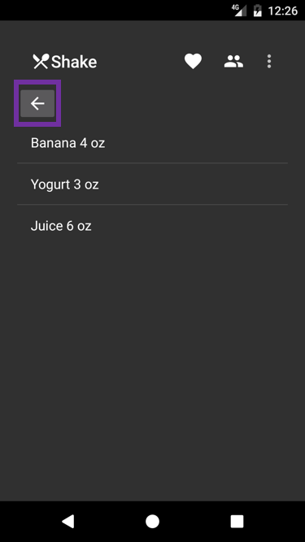
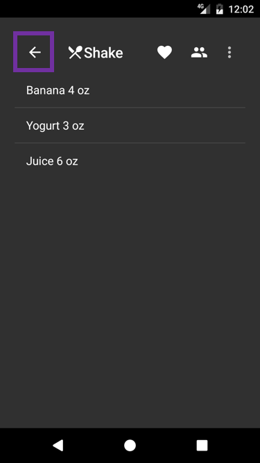

Duration
10 minutes
Goals
The primary goal of this lab is to use an app bar's built-in support for a navigation button. The image below shows the current state of the Recipes app after the completion of Exercise 4. In this exercise, your goal is to remove the highlighted button and relocate the navigation icon to the toolbar.
The image below shows the completed exercise with the navigation icon in its standard position within the Activity's app bar. When the user taps on the icon, we will navigate the app back to the previous Activity. Note that using app-bar navigation for "back" functionality is not always needed since Android has a standard back button; however, the same coding techniques we use here can be applied to more common cases such as "up" or "drawer" navigation.
Required assets
This is a continuation of the previous exercise. You can use your existing solution or open the solution in the Exercise 4/Completed folder. The Exercise 5 folder contains a subfolder named Completed with a solution you can use to check your work. Please make sure you have these folders before you begin.
Challenge
- Open DetailsActivity.cs.
- Enable navigation within the app bar.
-
Use
Resource.Drawable.ic_arrow_back_white_24dpas the navigation icon on the app bar. - Navigate backwards when the user clicks on the navigation button in the app bar.
- Remove unneeded code.
Steps
Add a navigation icon to an app bar
- Open DetailsActivity.cs.
-
Add the following two lines of code to
OnCreate(be sure to add these after you set the Toolbar as your app bar) . The first one enables the navigation button within the app bar and the second one specifies the icon we want the button to display.SupportActionBar.SetDisplayHomeAsUpEnabled(true); SupportActionBar.SetHomeAsUpIndicator(Resource.Drawable.ic_arrow_back_white_24dp);
Handle navigation-icon click
-
Add the following
caseto theswitchstatement inside yourOnOptionsItemSelectedmethod. Navigation-button clicks are reported using the special Android id Home.// ... case Android.Resource.Id.Home: Finish(); break; // ...
Remove unneeded code
- Open Details.axml.
-
Remove the
ImageButton. - Open DetailsActivity.cs.
-
Remove the click handler for the
ImageButtonfromOnCreate. The line of code to remove is shown below.FindViewById<ImageButton>(Resource.Id.backButton).Click += (sender, e) => Finish();
Summary
An Activity's app bar has built-in support for navigation: you get to choose the icon but the app bar will place it in the standard location and report clicks using the standard method override. This is another example of the benefits of uniformity: users know where the navigation icon is likely to be in the UI and developers know the coding pattern needed to implement it.